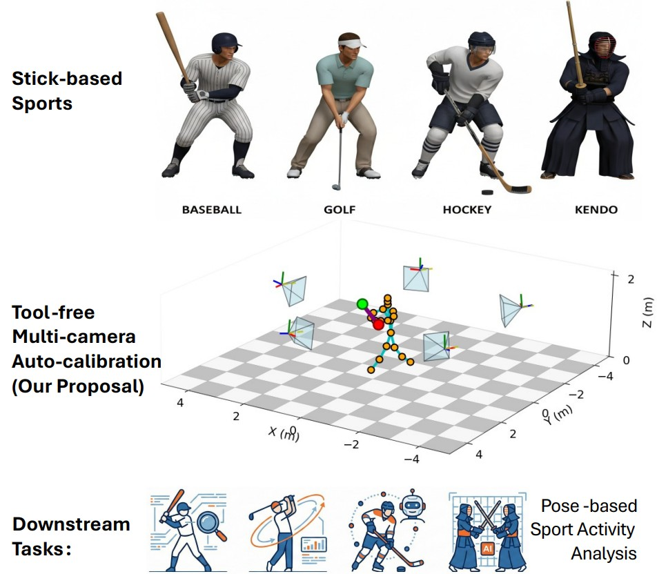
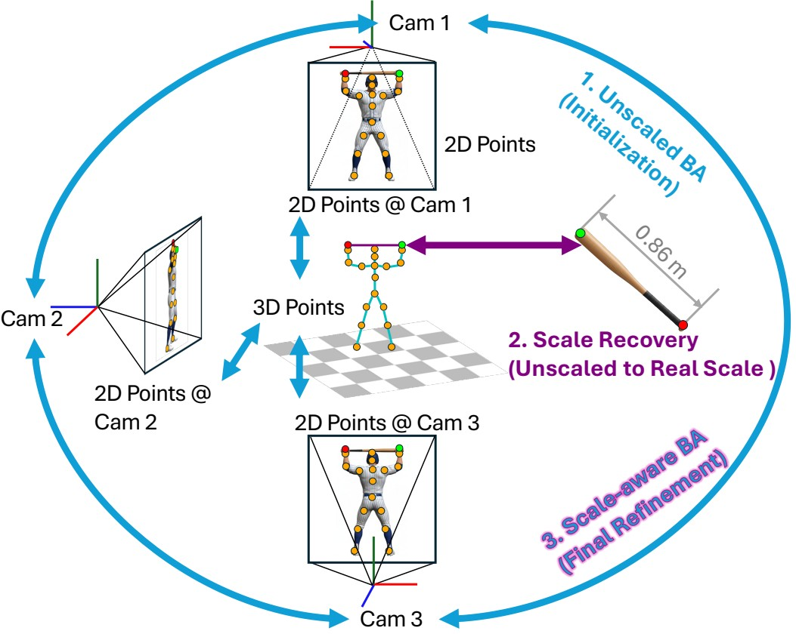
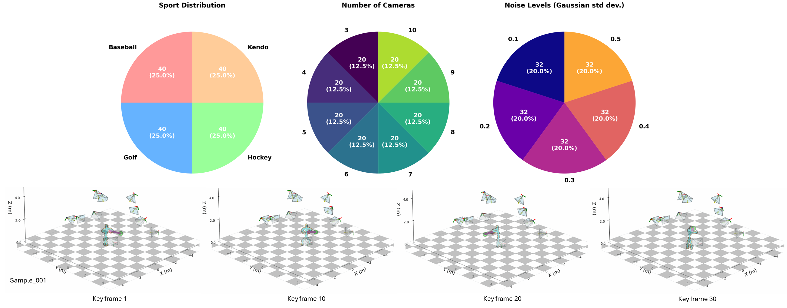
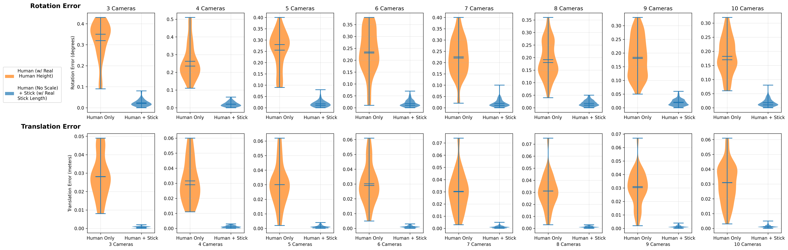
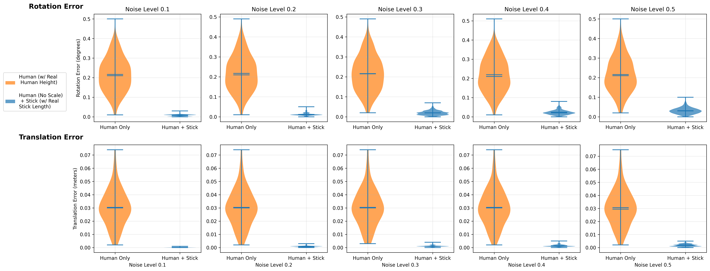
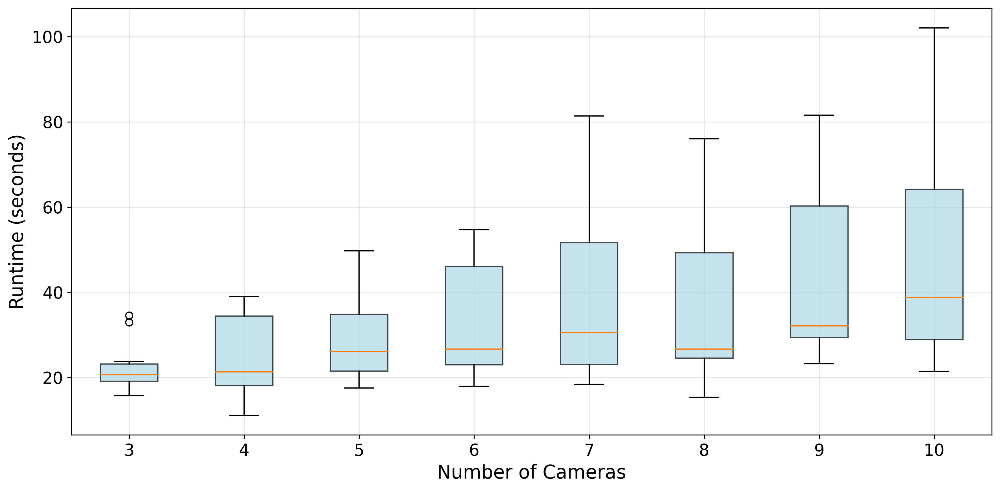
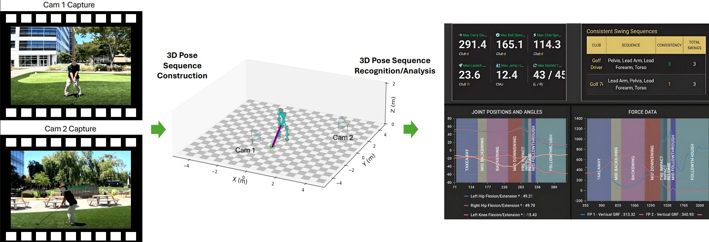

Abstract
Multi-camera systems are widely employed in sports to capture the 3D motion of athletes and equipment, yet calibrating their extrinsic parameters remains costly and labor-intensive. We introduce an efficient, tool-free method for multi-camera extrinsic calibration tailored to sports involving stick-like implements (e.g. golf clubs, bats, hockey sticks).
Our approach jointly exploits two complementary cues from synchronized multi-camera videos: (i) human body keypoints with unknown metric scale and (ii) a rigid stick-like implement of known length. We formulate a three-stage optimization pipeline that refines camera extrinsics, reconstructs human and stick trajectories, and resolves global scale via the stick-length constraint. Our method achieves accurate extrinsic calibration without dedicated calibration tools.
To benchmark this task, we present the first dataset for multi-camera self-calibration in stick-based sports, consisting of synthetic sequences across four sports categories with 3 to 10 cameras. Comprehensive experiments demonstrate that our method delivers SOTA performance, achieving low rotation and translation errors.
Methodology

Sports-Stick-Syn Dataset

Quantitative Results



Downstream Applications in Real Scenes


Citation
If you find this project useful for your research, please use the following BibTeX entry:
@inproceedings{yang2026multicamera,
title={Multi-Camera Self-Calibration in Sports Motion Capture: Leveraging Human and Stick Poses},
author={Fan Yang and Changsoo Jung and Ryosuke Kawamura and Hon Yung Wong},
booktitle={2026 International Conference on Automatic Face and Gesture Recognition (FG)},
year={2026}
}